| 日付 | 2022年5月29日（日） |
|---|---|
| 山域 | 那須 |
| メンバー | 単独 |
| 山行形態 | 日帰り |
| アクセス | 車 |
| ルート (Map) | 小山氏宅駐車場 (8:16) - (8:44) 送電線鉄塔 - (9:07) 林道終点 - (10:14) 鳥居 - (11:18) 日留賀岳 (11:50) - (12:36) 鳥居 - (13:22) 林道終点 - (13:41) 送電線鉄塔 - (13:59) 小山氏宅駐車場 |
天気のよさそうな週末で、家族で山に登ろうと思っていたが、
息子のスポーツクラブの自主練が入ったため、単独で山に行くことにする。
行先は日留賀岳。「ひるがたけ」という名の山は3つ知っているが、
漢字も山容も、三者三様である。
今回は大佐飛山地にある日留賀岳に登る。
大佐飛山地はほとんど登山道のない山域であり、
その中で日留賀岳は数少ない登山道が開かれた山である。
しかし行程の長さからか、訪れる者は少ない不遇の山だ。
小山氏宅の駐車スペースに車を停めさせていただく。標高680m。
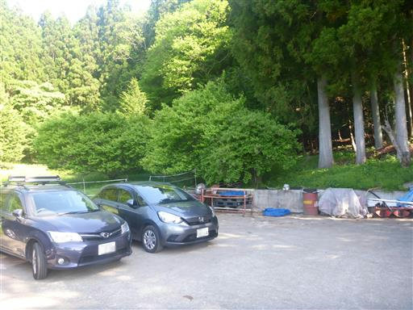
登山者名簿に名前を記入し、家の前を通って登山口へ。
ちょうど家の方がいたので、一声かけてから登り始める。
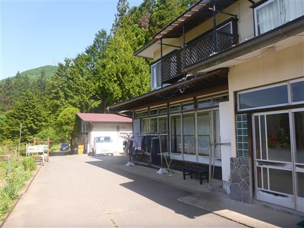
樹林帯の中の登りだ。
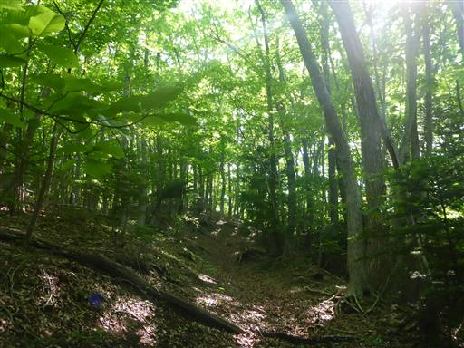
足元にギンリョウソウを発見。
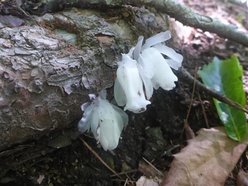
植林地帯もあるが、長くは続かない。
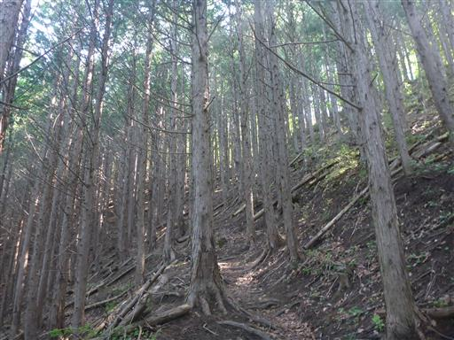
送電線鉄塔に到着。
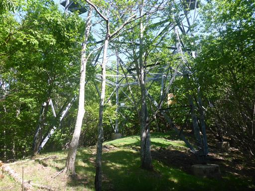
ここからしばらく林道を歩く。
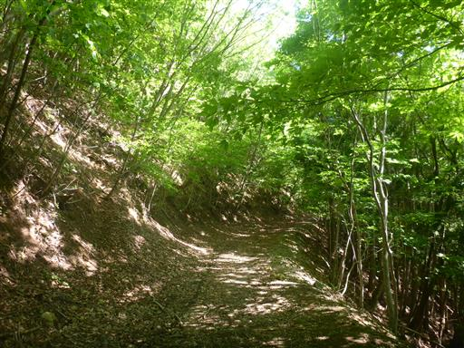
あちらこちら落石だらけ。少しは落石が端に除けられているのだが、
いまでも車両が通ることがあるのだろうか？
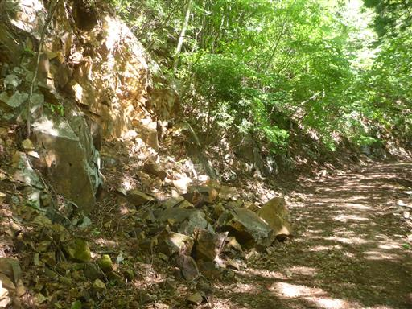
林道終点に到着。ここからは再び登山道だ。
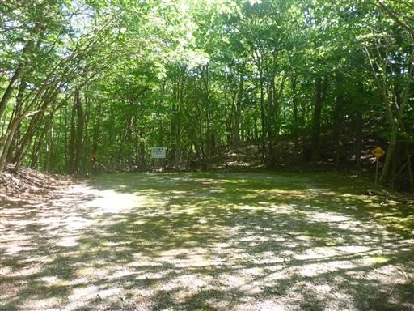
間違えやすそうなところには、ロープと標識がある。
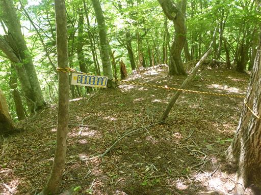
尾根に乗る。ハルゼミの鳴き声が賑やかだ。
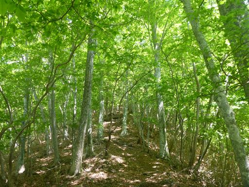
足元にハルゼミを発見。まだ生きているが、もう元気がない。
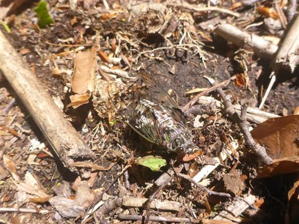
目指す日留賀岳の姿がようやく現れる。
だいぶ登ってきたが、まだまだ距離がありそうだ。
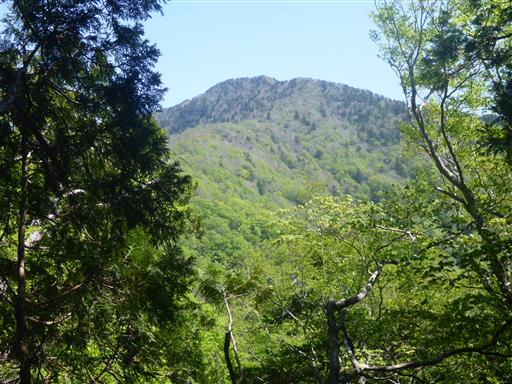
簡素な鳥居を潜る。
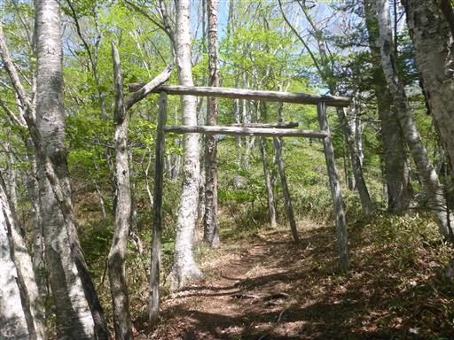
林床が笹になる。ブナの新緑が目に眩しい。
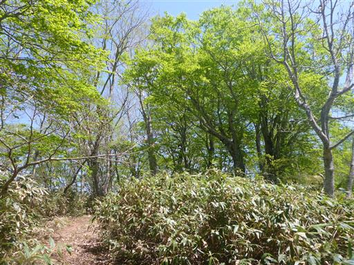
なにやら複雑な形をした木。
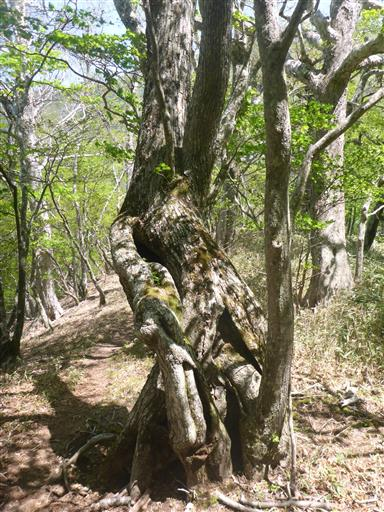
見上げると、終わりかけのツツジの花がチラホラと咲いている。
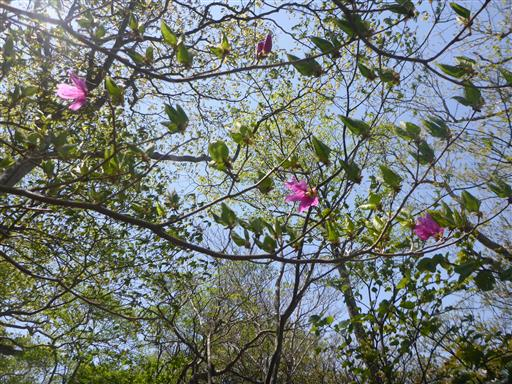
足元に咲くリンドウ。
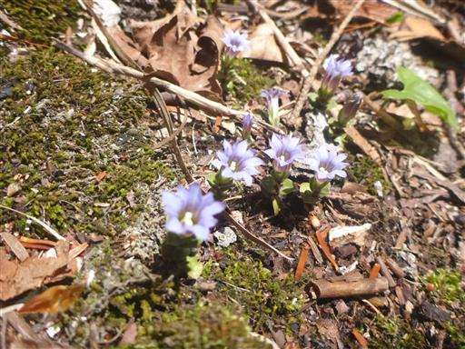
そしてシャクナゲが現れる。美しい花を咲かせている。
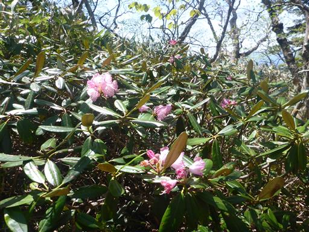
標高を上げるに従い、緑がだんだんと淡くなってくる。
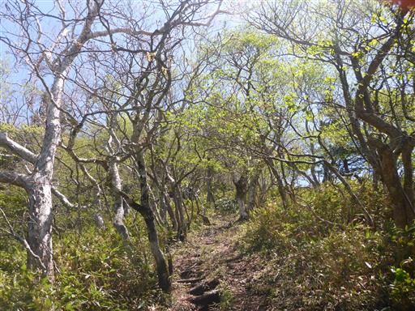
山頂の手前は急坂が続く。
ここまで登って来てのこの急斜面は結構つらい。
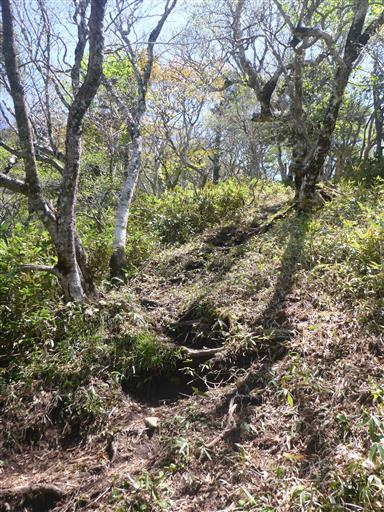
山頂が近くに見えてきた。あともう少しだ。
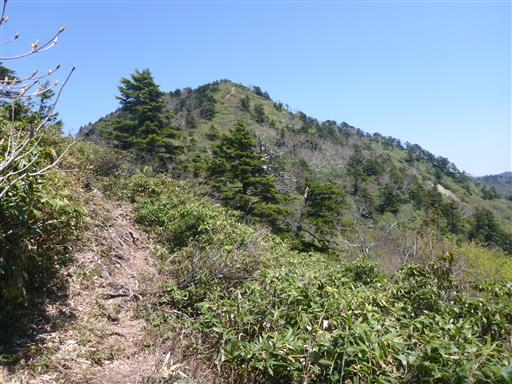
イワナシの花がたくさん咲いている。
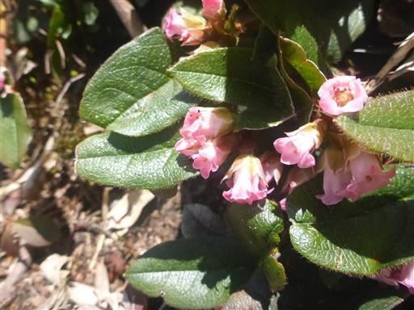
イワナシと一緒に白い花がたくさん咲いていたが、何という花だろう？
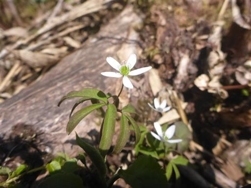
本山行で唯一の残雪。あと数日で消えてなくなりそうだ。
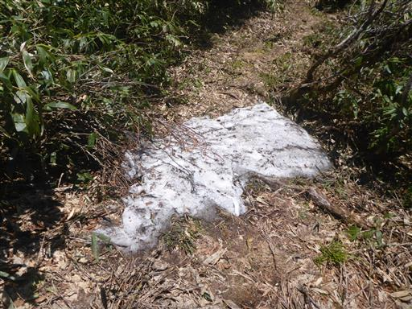
振り返ると高原山がきれいに見えている。
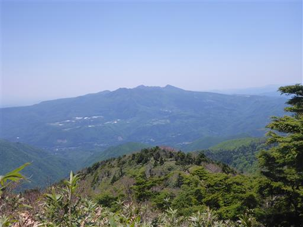
これはハイマツだろうか？
笹、シャクナゲ、ハイマツと三大藪のお出ましだ。
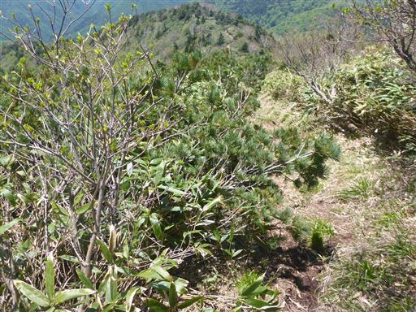
日留賀岳山頂に到着。標高1849m。
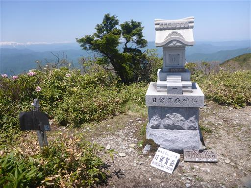
山頂からは360度の素晴らしい大展望が広がる。
遠くに見えるのは尾瀬の会津駒ヶ岳の辺りだ。
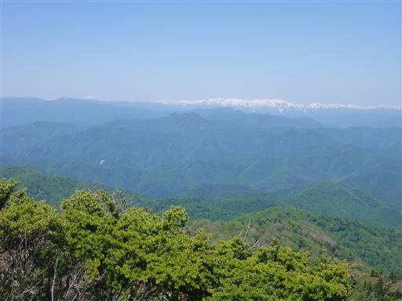
まだ雪で真っ白。2010年のゴールデンウィークに縦走した稜線だ。
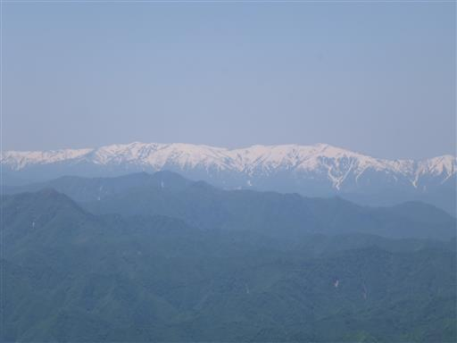
大佐飛山地の山々。どの山にも登山道はないが、いつか辿ってみたい山々だ。
山肌に削られた道は塩那道路と呼ばれるバブル時代に造られた観光用道路だ。
一度も供用されることなく廃道が決定して打ち捨てられた。
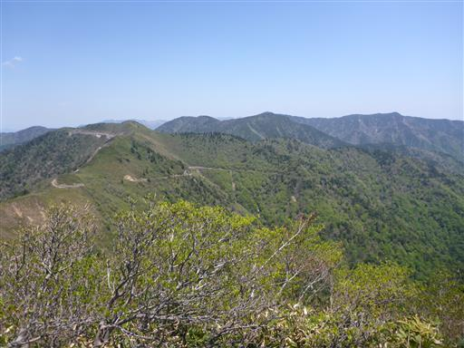
遠く日光の山々も望める。
左から女峰山、太郎山、日光白根山で、男体山は女峰山に隠されている。
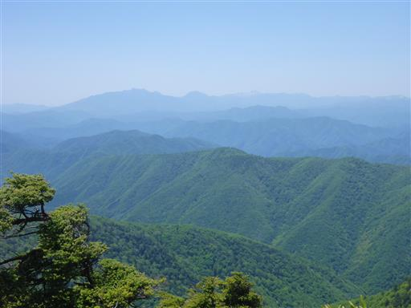
山頂に咲くシャクナゲ。素晴らしい展望と花々を満喫し、昼食をとったら下山を開始する。
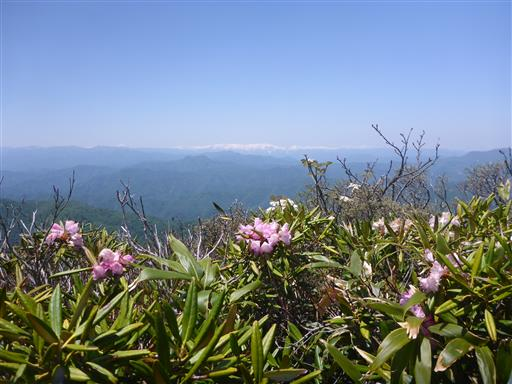
登りでは気付かなかった湖。堰き止められているように見えるので、人工湖だろう。
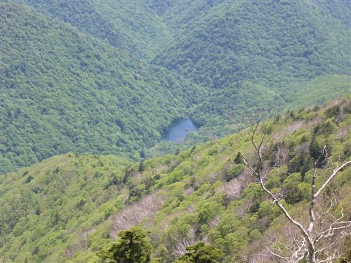
この辺りから比津羅山に寄り道して登ることができるのだが、
150mほど余分に登る必要があるのでパス。
特に何も無さそうな山頂だし、さすがに時間のロスが大きすぎる。
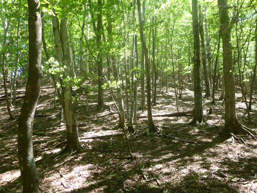
林道に到達。打ち捨てられたカーブミラーは案外きれいだ。
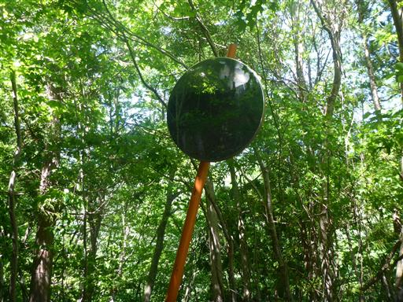
木にめり込んだ山火事注意の標識。
上側が外れて下部のみで支えられている。
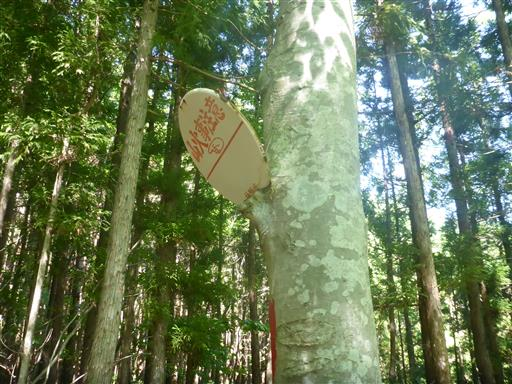
駐車場所まで戻ってくる。
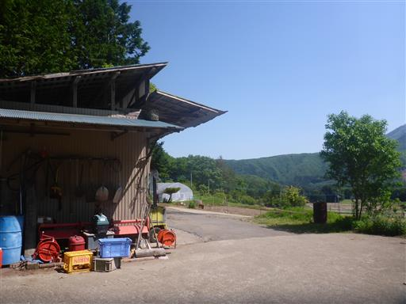
側の林にクガイソウが咲くというので探した見てが、花は全て終わっていた。
一週間前には咲いていたようなのだが残念。
日留賀岳は体力的にそこそこしんどい山だったが、
山頂からの大展望は素晴らしく、十分に登る価値のある山だった。
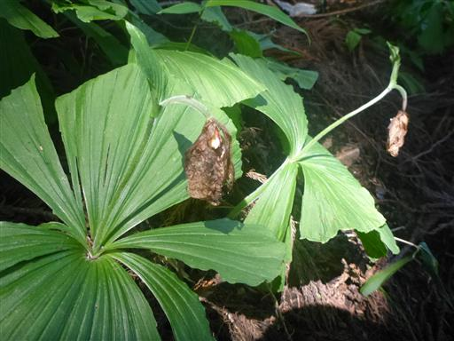